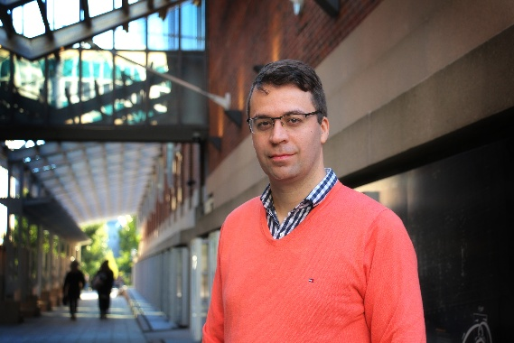
1. Peter Bruggeman Plenary talk
Affiliation: University of Minnesota, 111 Church Street SE, Minneapolis, MN 55455, U.S.A.
Tentative title: Plasma-liquid interactions
Peter Bruggeman is a Distinguished McKnight University Professor and the Ernst Eckert Professor of Mechanical Engineering at the University of Minnesota. He also serves as the Director of Graduate Studies, the Director of the High Temperature and Plasma Laboratory and Editor-in-Chief of Plasma Sources Science and Technology (IOPP). His research focuses on low temperature plasma science and engineering with applications in health, resource utilization, energy resilience and materials processing.
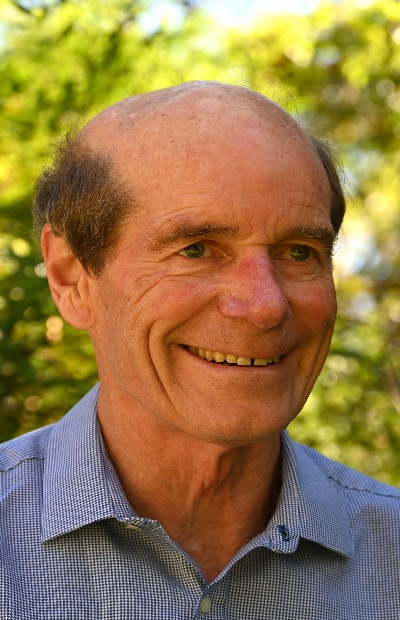
2. Tony Murphy Plenary talk
Affiliation: CSIRO, Manufacturing, PO Box 218, Lindfield NSW 2070, Australia
Tentative title: Computational modelling of arc processes: from welding to ironmaking
Tony Murphy is a Chief Research Scientist at CSIRO, Australia’s leading government research organisation. His main research focus has been the physics, chemistry and applications of thermal plasmas. He has published over 360 papers in refereed journals, with over 17,000 citations and an h-index of 64 in the Web of Science. He is Editor-in-Chief of 'Plasma Chemistry and Plasma Processing', and has received several awards, most recently the 2026 Ian Wark Medal from the Australian Academy of Science.
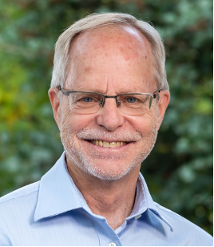
3. David Graves Plenary talk
Affiliation: Princeton University, Department of Chemical and Biological Engineering F214 SEAS-CBE, 35 Ivy Lane, Princeton, NJ 08544
Tentative title: Machine learning for plasma-surface simulations
David B. Graves joined the University of California at Berkeley Department of Chemical Engineering in 1986 and retired in 2020. He served as Associate Lab Director at the Princeton Plasma Physics Lab from 2020-2022 and is currently Professor in the Department of Chemical and Biological Engineering at Princeton University. His research interests are in plasma materials processing and other applications of non-equilibrium, low temperature plasma phenomena.
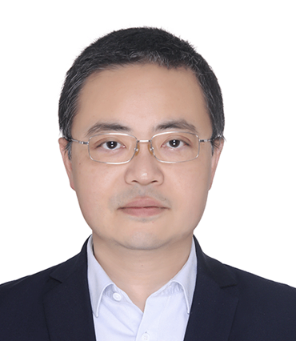
4. Heji Huang Plenary talk
Affiliation: Institute of Mechanics, Chinese Academy of Sciences, China
Tentative title: Plasma-Flow Interactions in High-Speed Compressible Regimes
Heji Huang has worked extensively in the field of thermal plasma dynamics, with particular emphasis on flow stabilization and energy transport processes in high-speed plasma flows. In recent years, he has led the development of a long-duration ultra-high-speed rarefied-gas wind-tunnel facility and conducted systematic investigations into the fundamental physics of rarefied high-speed flows and their interactions with materials and structures.
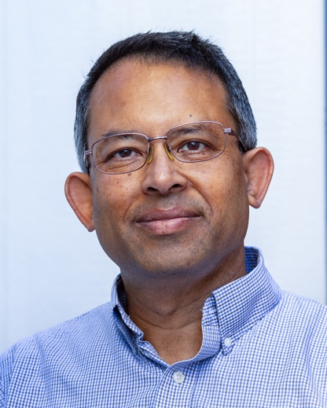
5. Shahid Rauf Plenary talk
Affiliation: Applied Materials, Inc., 3333 Scott Blvd, Santa Clara, CA 95054, United States of America
Tentative title: Modeling Plasma and Plasma–Surface Interactions: An Outlook for Advanced Semiconductor Processing
Dr. Shahid Rauf is Managing Director in Applied Materials, leading the Plasma Products Modeling team. His work focuses on physics‑based modeling of plasma sources and plasma processing applications for semiconductor manufacturing. Dr. Rauf has authored over 100 publications and holds over 100 patents. He received the Applied Materials 2020 Patent Hall of Fame award and the 2024 AVS Plasma Science & Technology Division Plasma Prize.
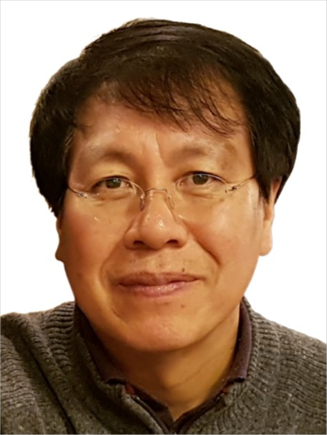
6. Wonho Choe Plenary talk
Affiliation: Korea Advanced Institute of Science and Technology (KAIST), 291 Daehak-ro, Yuseong-gu, Daejeon, Republic of Korea
Tentative title: Unique physical features of cylindrical Hall thruster plasmas for low power operation
Wonho Choe has been working on different fields of low temperature plasmas, including partially ionized plasmas (in particular, plasma-gas-liquid systems) and ExB closed drift plasmas (Hall thruster plasmas). In addition to fundamental physics research, as a strong advocate for innovation, he has successfully translated his scientific discoveries into industrial applications, co-founding two notable startups: one for low temperature plasmas for medical field, and the other for space electric propulsion. He was awarded Korea's Order of Science and Technology Merit in 2023.
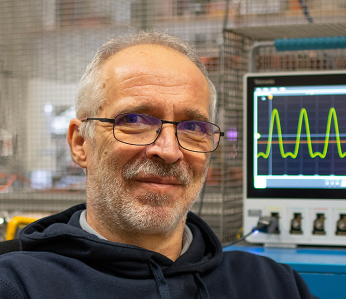
7. Zoltan Donko Plenary talk
Affiliation: HUN-REN Wigner Research Centre for Physics Budapest, Hungary
Tentative title: 20 years of driving waveform tailoring for radiofrequency plasma sources
Zoltan Donko has been working in the field of low-temperature plasma physics for almost four decades, on experimental studies of gas lasers, electron transport in gases, direct-current and radio-frequency plasma sources. He has developed a family of particle-based simulation codes to investigate the physics of these systems at the level of elementary processes. Besides being a research professor at Wigner Research Centre of Physics, he was a Visiting Scholar of Boston College, holds a Mercator Fellow position at the Ruhr University Bochum and a Visiting Professorship at Osaka University.
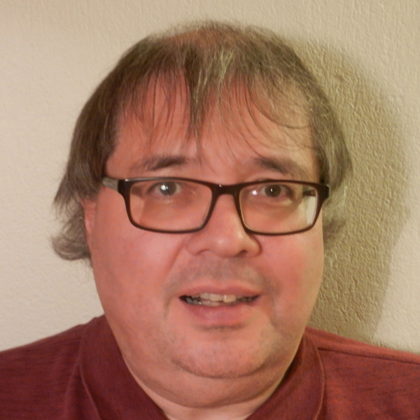
8. Jon Tomas Gudmundsson Invited talk
Affiliation: University of Iceland, Reykjavik, Iceland
Tentative title: Physics and technology of magnetron sputtering discharges
Jon Tomas Gudmundsson received the C.S. degree in electrical engineering and the M.S. degree in physics from the University of Iceland, Reykjavik, Iceland, in 1989 and 1991, respectively, and the Ph.D. degree in nuclear engineering from the University of California at Berkeley, Berkeley, CA, USA, in 1996. He joined the Science Institute, University of Iceland, in 1997, the Faculty of Electrical Engineering, University of Iceland, in 2001, and the University of Michigan–Shanghai Jiao Tong University Joint Institute, Shanghai, China, in 2010. Since 2013, he has been a Professor of physics with the University of Iceland. Since 2015, he has also been an Affiliated Professor in the Department of Electromagnetics and plasma physics at KTH Royal Institute of Technology, Stockholm, Sweden. His research interests include various low-pressure discharges, including capacitive discharges, inductively coupled discharges, magnetron sputtering discharges, and Hall thrusters, which he has explored both experimentally and with modeling work.
9. Wei Jiang Invited talk
Affiliation: School of Physics, Huazhong University of Science and Technology, 1037 Luoyu Road, Wuhan, Hubei 430074, China
Tentative title: Self-consistent Numerical Modeling of RF Plasmas and Their Nonlinear Interactions with External Circuits
Wei Jiang is an Associate Professor at Huazhong University of Science and Technology, China. He received his Ph.D. in Plasma Physics from Dalian University of Technology in 2010 and completed a postdoctoral fellowship at KU Leuven, Belgium during 2013-2015. His research focuses on fundamental plasma physics and numerical modeling of low-temperature plasmas.
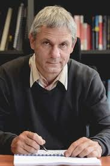
10. Ralf Peter Brinkmann Invited talk
Affiliation: Department of Electrical Engineering and Information Science, Ruhr-University Bochum, Germany
Tentative title: A model for tailored-waveform radiofrequency sheaths at arbitrary levels of collisionality
Ralf Peter Brinkmann is Professor of Theoretical Electrical Engineering at Ruhr University Bochum, Germany. He studied electrical engineering and physics and earned his doctorate in 1986. After research positions in Chicago, Norfolk, and Siemens Corporate Research, he joined Bochum in 2000. His work focuses on plasma science and technology, with significant contributions to diagnostics and modeling, and extensive supervision of doctoral research.
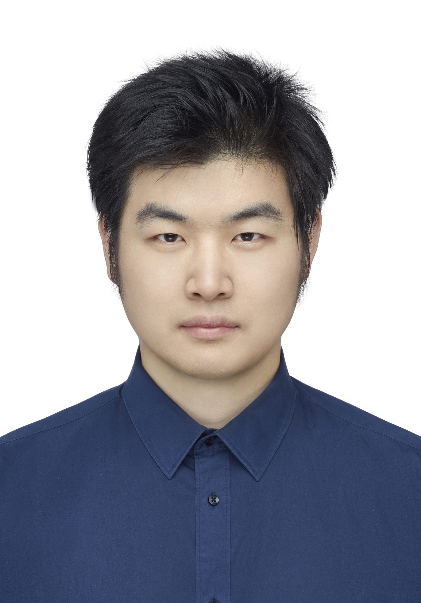
11. Bangdou Huang Invited talk
Affiliation: Institute of Electrical Engineering, Chinese Academy of Sciences
Tentative title: Ionization waves during pulsed gas breakdown and their modulation
Dr. Bangdou Huang received his Bachelor’s degree in Engineering Physics and Ph.D. degree in Nuclear Science and Technology from Tsinghua University. Currently, he is an Associate Researcher at the Institute of Electrical Engineering, Chinese Academy of Sciences. His current research interests include pulsed power, optical diagnostics, plasma kinetics, and plasma applications.
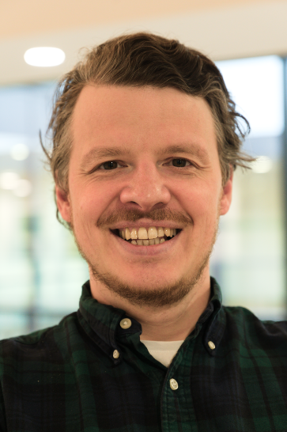
12. Nikolai Andrianov Invited talk
Affiliation: Silicon Austria Laboratories, Austria (nikolai.andrianov@silicon-austria.com)
Tentative title: Precision Plasma Etching of AlN for Quantum Photonics
Senior Scientist and Plasma Process Team Lead at Silicon Austria Labs with over 17 years of experience in the semiconductor industry, including a decade as a Senior Plasma Etch Process Engineer in Saint Petersburg, Russia. Holds a PhD in Physics from Saint Petersburg State Polytechnic University, with a thesis titled "Plasma-based processes in III-nitride HEMT technology". Expertise in plasma etching, PECVD, microfabrication, and wide bandgap materials. Experienced in leading research teams and driving industrial R&D projects in MEMS, photonics, and power electronics.